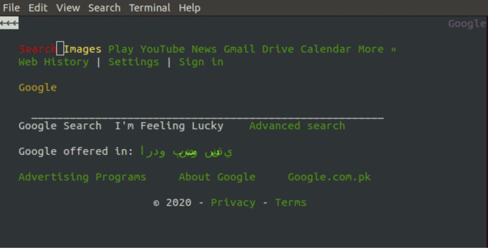
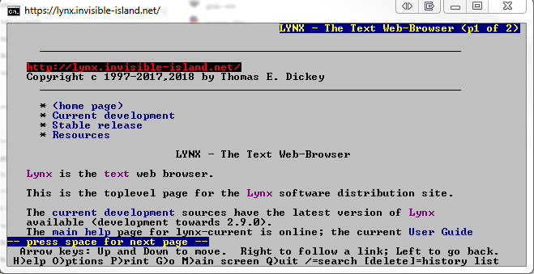
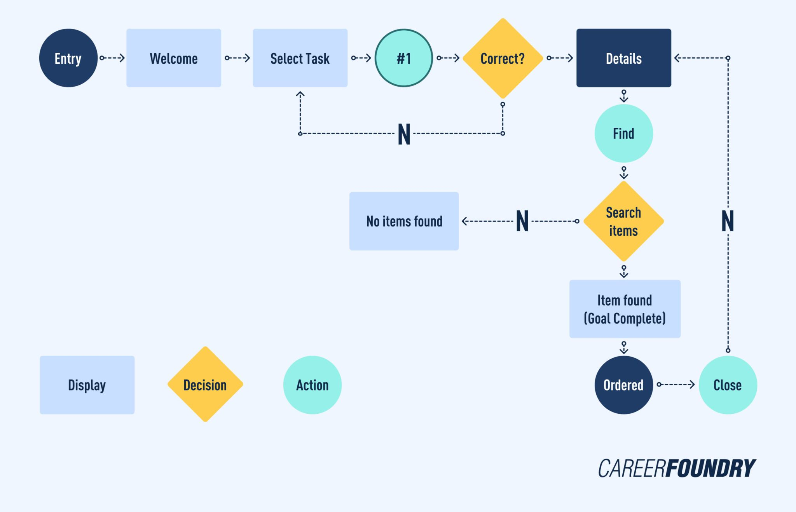

Before the modern websites we have today, there were also the first type of website to ever exist: The Text-Based type Websites.
In this project, we will be discussing two different aplications that enter in this category. Some may have heard them, some have not.
Of course, I'm talking about...:
Lynx, the oldest and one of the well known text based browsers we have today.
And also Browsch,the most recent text-based web browser who made a name for itself through possible reviwes and so on...
A text-based web browser is a web browser that renders only the text of web pages, and ignores most graphic content. Under small bandwidth connections, usually,
they render pages faster than graphical web browsers due to lowered bandwidth demands. Additionally, the greater CSS, JavaScript and typography functionality
of graphical browsers require more CPU resources. They also can be heavily modified to display certain content differently
Text-based browsers are often very useful for users with visual impairment or partial blindness. They are especially useful with speech synthesis or text-to-speech software,
which reads content to users.
About the said applications
Lynx is a customizable text-based web browser for use on cursor-addressable character cell terminals.
As metioned earlier, Lynx is one of the oldest text-based web-Broswer we have today since the browser itself was made in 1992.
Lynx was a product of the Distributed Computing Group within Academic Computing Services of the University of Kansas, and was
initially developed in 1992 by a team of students and staff at the university (Lou Montulli, Michael Grobe and Charles Rezac) as a
hypertext browser used solely to distribute campus information as part of a Campus-Wide Information Server and for browsing the
Gopher space.
The Browsh web browser represents web pages as text and can be run either from a terminal client environment or from a web browser. As of August 2018 the web browser client remains
less developed. It has been developed since 23 April 2016. It uses Go as a core part of its implementation. Browsh uses a headless version of Mozilla Firefox to fetch and parse web
pages.
Lynx- World's Oldest Text-based Web Server
Features:
-Reading documentation or downloading files in a text-based environment
-To access websites without graphical displays
-For use on low bandwidth Internet connections
-For use on low bandwidth Internet connections
-For use on older and slower computer hardware
-For fast, safe browsing of text-based web sites
-Search Engine View Emulation
-Incorporating into scripts and to automate tasks

Release built with curses (color-style)

Release built with slang
Browsch-The modern text-based Web
When it comes to the reception this web browser receives,this may be seen as a modern
replacement for the Lynx text-based web browser. One sole reason for this opinion is that sometimes showing
the web in text format is someitmes impractical at best.
What makes a good Web Browser?
When it comes to web browsers in general, the one thing we should keep an eye out for is that the functions/comands present
are simple to understand and being able to "surf the web" with ease. All of it depends of the user's preferences in that said website.

The image shown above consists in how usually a user intereacts with the website he's trying to use. Being text-based or not is not an issue in itself.
Both aplications respect that kind of simplicity since you only rely on text comands for simple functions such as visiting a link and so on.
This is how a user usually operates in Lynx:
And this is how the user operates in Browsch:
TUI Controls
In Lynx's case, all neecesary commands are shown at the bottom of the terminal the user is running:
-Press left to go to link
-Press right to go to previous link
-Pressing H for help for more comands the user can... well... use
Etc
The image below represents how the user interracts with the comands given to him:
In my opinion, the user won't have any trouble in remembering the essential commands necesary to navigate.
But when it comes to Browsch, it is a special case for the user. For example:
-Most of its functions are the same as the normal browswer type.
-Exploration is the same.
-Can do wahtever a graphcial browser can.
Text Web Browser VS Modern Graphic Browser
Type: Negative
Name: NickJohnas
Background
Date of Birth:
Gender:Male
Location:Iasi, Romania
Work place:Zemmernet, Web Designer
Main Points
-Tackled a few website projects of his own.
-Styling the website with different things could prove dificult.
-He doesn't work much using terminal.
-John prefers to work alone most of the time when doing a project, but he doesn't mind any kind of help from time to time.
-He may look intimidating but John is a nice guy to hang around with.
Goals
-Practical Goals: Wanting to be efficient.
-Personal Goals: Getting the experience necesary to make great websites.
-Business Goals: Making the website accessible to anyone.
Frustrations and Pain Points
-Text Based Browesers seem overwhelming at first.
-Sometimes it is slow.
-It is unreadable.
Detailed Description
"John is a 30-year old, living his dream job as a web designer. Even before he graduated college, John was passionate by IT, but more specifically by the many browsers and website the internet offfers.
And such, he puts his knowledge and skills to help his current company."
Scenarios
John wonders what the difference between the Text-Based and Graphical Web Browsers.
Would it be worth for him to switch from his current browser to a different one?
Type: Secondary
Name: MikeThompson
Background
Date of Birth:
Gender:Male
Location:New York, USA
Work place:Amazon, Engineer
Main Points
-Tackled in many projects regarding many apps and what they should contain.
-He tends to be shy sometimes, but he gets along with anyone in his line of work.
-He wants to be heleful if someone in his group is having trouble.
Goals
-Practical Goals: Teamwork
-Personal Goals: Gaining more experience when it comes to knowing apps.
-Business Goals: Being the best teammate in his group.
Frustrations and Pain Points
Some of the difficulties the user has with the product.
-Dificult to use sometimes.
-The transition from usuing a graphical browswer to text-based can be overwhelming.
-Hard to use at first.
Detailed Description
"Mike is a passional 24-year-old who gradutated college and now working on a job that suits him.
During his time in college, he aquiered enough knowledge to tackle any kind of problem regarding the web, but nonetheless
he wants to gain experience in a real work environment."
Scenarios
-In Mike's case, would it be as accessible as the regular browsers?
-How will it affect him on his first use?
Type: Primary
Name: LukeJones
Background
Date of Birth:
Gender:Male
Location:Iasi, Romania
Work place:Microsoft, Programmer
Main Points
Experience in coding any kind of language: c++, java, etc.
Doesn't like when he thinks for too long.
He can be a slow-learner sometimes.
Depends on where he is actually owrking: At home, he can get it done by himself, at work, he much prefers to work with others.
Can be friends with almost everybody.
Goals
Personal Goals: Improving on his already existing knowledge.
Business Goals: Showing his growth in his company.
Frustrations and Pain Points
Luke himself knowsn what it means for a user to have a great experience.
He thinks that graphical browswer can be confusing in terms of design.
For Luke, making a fully-fledged website cna be a hassle(making sure the content is placed right, designing the layouts, etc)
Detailed Description
"Luke is a 40-year adult and a kind father of two children. From time to time, he uses his computer to look
into the different horizons of coding and never hesitates to give it a try if he has free time. Sometimes he even does it at
his workplace and he is having a good time doing it."
Scenarios
Questions Luke might ask when he first uses the Text-Based Browser:
-Would it be different than the modern graphical ones?
-Will it perform to his expectations?
Possible Storyboards for each app
Example for Lynx
Example for Brosch
Are the Empiric Laws Necesary?
Regardless od what kind of browser we chose to use, it doesn't change the fact that most of the laws we use in the
modern browser, the same can be true for text-based ones. Here are some reasons why. But since Browsh is just like the modern web browsers,
but too pixelated, we will only be taking Lynx in consideration in oder to identify those said laws in text-based browsers.
1. Fitt's Law can be adapted with Text-Based websites like Browsh where we need to click in order to enter URL. The less content, the faster we can navigate.
2. Hick's Law can be addapted with the choices the user has in these said browsers. Those choices are considered in the comands that can execute.
For example, Lynx has all 10 comands listed bellow, while Browsh has more than that ammount.
3. When it comes to Steering Law, it can be tricky since both browswers that I'm talking in this article operate almost the same way. Though the only difference between the two
could be that Lynx is easy to travel, but Brownsh has difficulties when it comes to its build(since it moves slower than normal graphical browsers).
Features we can consider implementing
For Browsh:
1. Menu on the bottom side of the screen (Like Lynx has, but clikable.)
2. Option for Keyboard control.
3. Lightweight Mode.
For Lynx:
1. Color Scheme change
2. Always accept important cookies
Overall Impressions of the aplications
Accessability Improovements
For Lynx:
1.Better Structuring by using headers.
2.Respecting the white space between links.
3.Matching colour scheme.
For Browsh:
1.Avoid using tiniy text fonts or blending them with images.